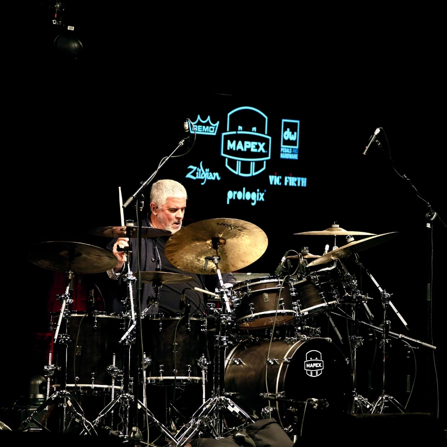
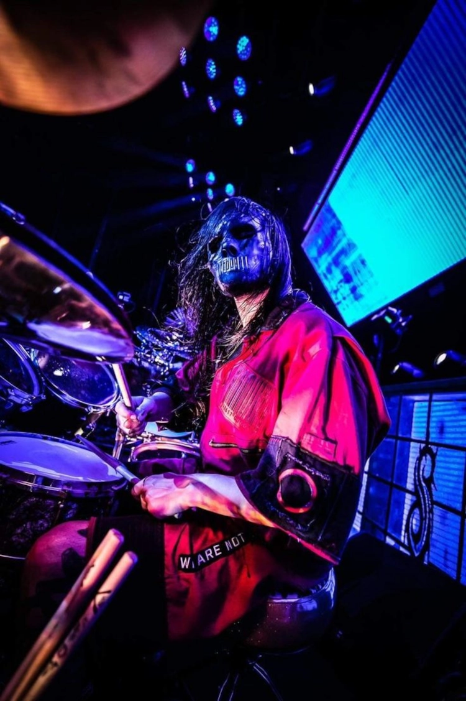

Sobre nosotros
Hemos estado atendiendo a bateristas desde 1987 en el corazón de Amberes; Drumstore no necesita presentación. En estas páginas encontrarás un resumen de los productos y servicios que ofrecemos.
Además de las numerosas marcas con las que trabajamos, también puedes contactarnos para reparaciones de baterías, backline y alquileres.
Si quieres deshacerte de esa batería vieja que tienes en el ático, simplemente contáctanos.
Sabemos que comprar un instrumento de percusión requiere un ambiente tranquilo, donde no sea un vendedor quien hable, sino el propio instrumento. Por ello, hemos decidido trasladar nuestra tienda a un lugar tranquilo fuera de la ciudad, donde solo atendemos con cita previa. Conversamos sobre lo que buscas, preparamos un set para que compares distintos productos, te asesoramos cuando es necesario, etc.
En un mundo de automatización, centros de llamadas y generalización, hemos elegido un enfoque completamente personalizado para nuestros clientes.
Ofrecemos soporte técnico profesional para baterías, tanto en escenarios como en estudios de grabación. Alquilamos baterías, platillos y una amplia variedad de instrumentos de percusión para conciertos y estudios.
Los productos profesionales y exclusivos para bateristas son nuestra pasión. Envíanos tu rider y te daremos nuestra mejor oferta.